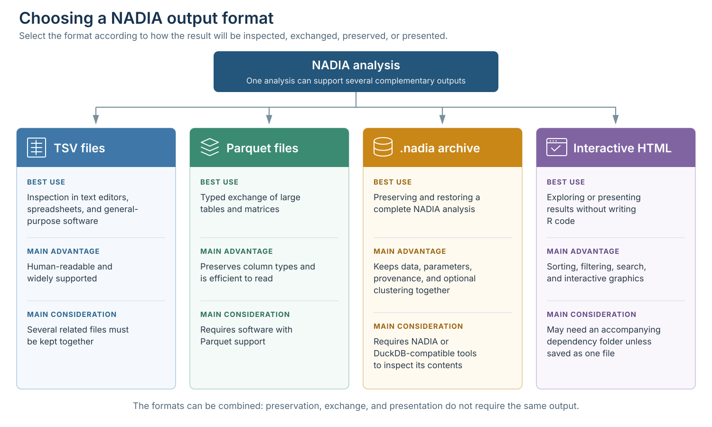
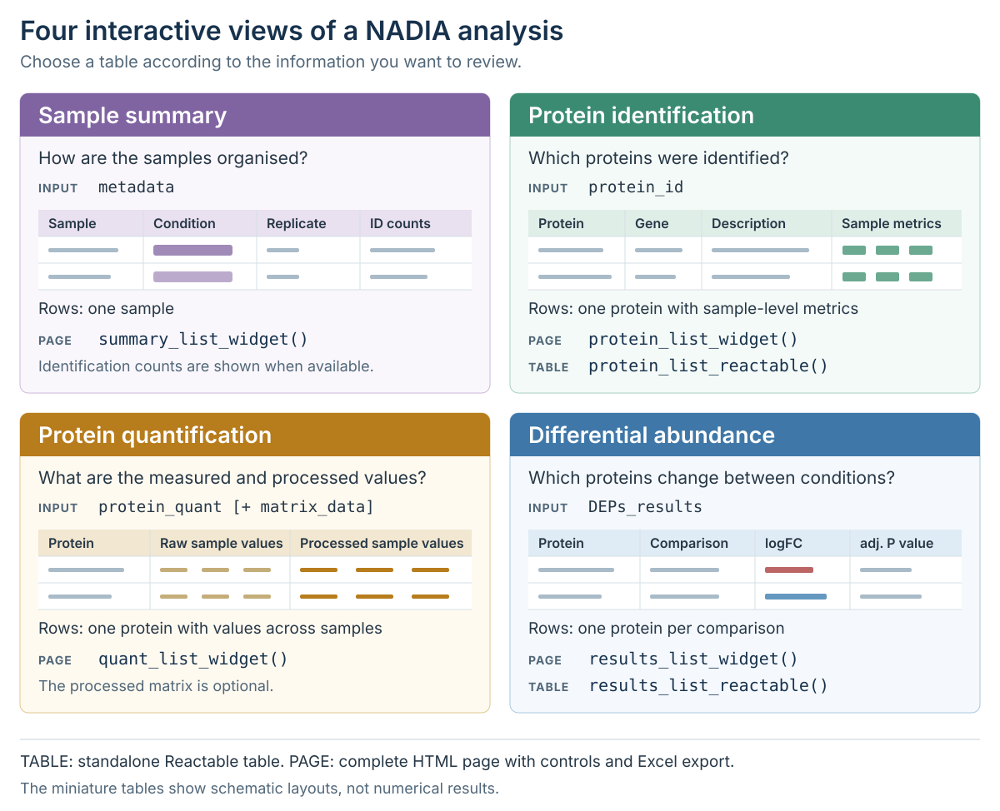

Results and export: sharing and preserving an analysis
Sergio Ciordia
Source:vignettes/results-and-export.Rmd
results-and-export.RmdIntroduction
A proteomics analysis should finish with outputs that other people
can inspect and that the analyst can reproduce later. NADIA supports
several complementary routes: selected tables can be exported as TSV or
Parquet files, a complete run can be archived in one .nadia
file, and interactive tables or figures can be shared as HTML.
This vignette explains when to use each route, how to create the corresponding files, and how to verify what has been saved. The examples use the bundled DIA dataset so that every output can be reproduced without external files.
Prepare an example analysis
This section creates one NADIA result that will be reused throughout the vignette. Keeping a single analysis object also makes it easier to compare the different export formats.
Install and load NADIA
Install NADIA through Bioconductor if it is not already available, and then load the package and example data.
if (!requireNamespace("BiocManager", quietly = TRUE)) {
install.packages("BiocManager")
}
BiocManager::install("NADIA")Run the processing workflow
process_proteomics() returns all analysis components in
memory. Because export_dir is not supplied here, this call
does not create any files.
res <- process_proteomics(
nadia_dia,
verbose = FALSE
)The returned object contains the processed experiment, differential-abundance results, plotting tables, comparison names, and the parameters used in the run. The following code summarises the size and purpose of the main components used throughout this vignette.
Show the code used to summarise the returned components
component_summary <- data.frame(
Component = c(
"se_proc",
"DEPs_results",
"BoxPlot_Input",
"PCA_Input",
"comparisons",
"parameters"
),
Rows = c(
nrow(res$se_proc),
nrow(res$DEPs_results),
nrow(res$BoxPlot_Input),
nrow(res$PCA_Input),
length(res$comparisons),
length(res$parameters)
),
Columns = c(
ncol(res$se_proc),
ncol(res$DEPs_results),
ncol(res$BoxPlot_Input),
ncol(res$PCA_Input),
"\u2014",
"\u2014"
),
Purpose = c(
"Processed assays and sample metadata",
"Differential-abundance statistics",
"Long-format intensities for boxplots",
"Long-format intensities and significance flags for PCA",
"Available pairwise comparisons",
"Analysis settings and recorded function call"
),
check.names = FALSE
)
knitr::kable(
component_summary,
caption = "Main components returned by process_proteomics().",
align = c("l", "r", "r", "l")
)| Component | Rows | Columns | Purpose |
|---|---|---|---|
| se_proc | 1997 | 12 | Processed assays and sample metadata |
| DEPs_results | 5991 | 12 | Differential-abundance statistics |
| BoxPlot_Input | 47928 | 6 | Long-format intensities for boxplots |
| PCA_Input | 23964 | 9 | Long-format intensities and significance flags for PCA |
| comparisons | 3 | — | Available pairwise comparisons |
| parameters | 38 | — | Analysis settings and recorded function call |
The values are calculated directly with nrow() and
ncol(), but the row count reflects the structure of each
object rather than the number of unique proteins.
DEPs_results contains 1,997 proteins across three
comparisons (5,991 rows), BoxPlot_Input contains the same
proteins across 12 samples and two assays (47,928 rows), and
PCA_Input contains one row per protein and sample (23,964
rows). In the three data frames, Columns counts the
available variables; in se_proc, its 1,997 rows and 12
columns correspond directly to proteins and samples, respectively. The
final two components are not tabular: comparisons contains
three contrast names and parameters contains 38 recorded
analysis entries, so Columns is not applicable to them.
Choose an output for the task
The most appropriate output depends on who will use it and whether they need selected results or the complete analysis. The following diagram compares the four main options used in this vignette.

Four complementary formats for exporting, preserving, or presenting NADIA results.
The four formats address different priorities. TSV files favour
immediate, human-readable inspection, whereas Parquet preserves column
types for efficient programmatic exchange. A .nadia archive
is the most complete option for restoring the analysis and its
provenance, while interactive HTML is designed for exploration and
presentation without R code. These outputs are complementary: a
practical workflow can retain the .nadia archive as the
master record, export TSV or Parquet tables for downstream use, and
share HTML with collaborators for interactive review.
Export tabular results
Having introduced the file formats supported by NADIA, we now examine
them in turn, beginning with TSV and Parquet. Both can store the same
result tables; the choice affects only how they are stored and read.
This section first compares the two formats and then shows how to export
either one, or both, directly from
process_proteomics().
Choose between TSV and Parquet
TSV and Parquet store the same tabular information in different ways. TSV is tab-separated plain text that can be opened directly in a text editor or spreadsheet, making it convenient for manual inspection and exchange. However, column types must be inferred when it is read, and large files can require considerable disk space.
Parquet is a compressed, binary columnar format widely used in data
analytics. Storing values by column allows software to read only the
data it needs, making access faster and files smaller. Because Parquet
is not human-readable, it requires compatible software: in R,
arrow::read_parquet() can load it into memory, while DuckDB
can query it directly.
The following table compares the main characteristics of the TSV and Parquet formats.
Show the code used to compare TSV and Parquet
format_guide <- data.frame(
Property = c(
"File structure",
"Readable as plain text",
"Direct manual inspection",
"Column types",
"Storage requirement",
"Repeated programmatic access",
"Typical use"
),
TSV = c(
"Tab-delimited text",
"Yes",
"Text editor or spreadsheet",
"Inferred when imported",
"Larger for substantial tables",
"Requires parsing the text",
"Review, exchange, and small analyses"
),
Parquet = c(
"Compressed columnar binary",
"No",
"Requires Parquet-aware software",
"Stored in the file schema",
"Usually smaller",
"Fast, including selected-column reads",
"Data analytics and automated workflows"
),
check.names = FALSE
)
knitr::kable(
format_guide,
caption = "Practical differences between TSV and Parquet exports.",
align = c("l", "l", "l")
)| Property | TSV | Parquet |
|---|---|---|
| File structure | Tab-delimited text | Compressed columnar binary |
| Readable as plain text | Yes | No |
| Direct manual inspection | Text editor or spreadsheet | Requires Parquet-aware software |
| Column types | Inferred when imported | Stored in the file schema |
| Storage requirement | Larger for substantial tables | Usually smaller |
| Repeated programmatic access | Requires parsing the text | Fast, including selected-column reads |
| Typical use | Review, exchange, and small analyses | Data analytics and automated workflows |
In summary, TSV is best for simple inspection and exchange, whereas Parquet is better suited to large datasets and repeated computational analysis because it is smaller, faster to read, and preserves column types. Use both when manual readability and efficient processing are equally important.
Create a set of TSV and/or Parquet files
process_proteomics() can write processed matrices and
plotting inputs while it runs. Export is activated only when
export_dir is supplied; with its default value of
NULL, all results remain in memory and no directory or file
is created. The value of export_format then selects TSV,
Parquet, or a matched copy in both formats.
Main export arguments of process_proteomics()
-
export_dirgives the destination directory. Its default value,NULL, disables every file export. -
export_formataccepts"tsv","parquet", or"both". The last option writes the same selected tables in both representations. Parquet export throughprocess_proteomics()requires thearrowpackage. -
export_normalizedandexport_imputedcontrol the processed intensity matrices. -
export_volcano,export_boxplot, andexport_pcacontrol the tables used by the corresponding visualisation functions.
The following alternatives differ only in export_dir and
export_format. Run the one that matches the intended
downstream use; repeating the full analysis three times is not
necessary.
# Export one TSV file for every enabled output.
process_proteomics(
nadia_dia,
export_dir = "results/tsv",
export_format = "tsv",
verbose = FALSE
)
# Export the same outputs only as compressed Parquet files.
process_proteomics(
nadia_dia,
export_dir = "results/parquet",
export_format = "parquet",
verbose = FALSE
)
# Export matched TSV and Parquet copies of every enabled output.
process_proteomics(
nadia_dia,
export_dir = "results/tsv_and_parquet",
export_format = "both",
verbose = FALSE
)With the default export switches, NADIA writes five datasets: the
normalised intensity matrix (export_normalized), the final
imputed matrix (export_imputed), the differential-abundance
results used by the volcano plots (export_volcano), the
long-format intensities used by the boxplots
(export_boxplot), and the imputed intensities with
significance annotations used by PCA and heatmaps
(export_pca). The matrix files contain one protein per row
and one sample per intensity column, whereas the plotting inputs use
long or results-oriented layouts suited to their downstream functions.
File names include the normalisation and imputation methods so that
outputs from different runs can be distinguished.
The next call writes all five default outputs as TSV files to a
temporary directory and displays the types of files generated. In a real
analysis, replace export_dir with a permanent project
directory.
Show the code used to create the export manifest
export_dir <- file.path(tempdir(), "nadia_vignette_tables")
unlink(export_dir, recursive = TRUE)
invisible(process_proteomics(
nadia_dia,
export_dir = export_dir,
export_format = "tsv",
verbose = FALSE
))
exported_files <- list.files(export_dir, full.names = TRUE)
file_contents <- ifelse(
grepl("matrix_log2.*Imp", basename(exported_files)),
"Imputed intensity matrix",
ifelse(
grepl("matrix_log2", basename(exported_files)),
"Normalised intensity matrix",
ifelse(
grepl("VolcanoPlot", basename(exported_files)),
"Differential-abundance results",
ifelse(
grepl("BoxPlot", basename(exported_files)),
"Long-format boxplot input",
"Long-format PCA input"
)
)
)
)
export_manifest <- data.frame(
File = basename(exported_files),
Contents = file_contents,
Size = sprintf("%.1f KB", file.info(exported_files)$size / 1024),
check.names = FALSE
)
knitr::kable(
export_manifest,
caption = "Files created by the default TSV export.",
align = c("l", "l", "r")
)| File | Contents | Size |
|---|---|---|
| BoxPlot_Input_cycloess_Impseqrob_min.tsv | Long-format boxplot input | 1999.3 KB |
| matrix_log2_cycloess_Impseqrob_min.tsv | Imputed intensity matrix | 450.1 KB |
| matrix_log2_cycloess.tsv | Normalised intensity matrix | 423.1 KB |
| PCA_Input_cycloess_Impseqrob_min.tsv | Long-format PCA input | 2317.0 KB |
| VolcanoPlot_Input_cycloess_Impseqrob_min.tsv | Differential-abundance results | 635.8 KB |
The filenames record the normalisation and imputation methods, reducing the risk of mixing tables from different runs. The plotting inputs are intentionally long: each row represents an observation required by its corresponding plot, whereas the two matrix files keep one protein per row.
Exports can also be assembled à la carte with the five
switches shown above. Each export_* argument is
TRUE by default; set it to FALSE to omit that
dataset. The value of export_format is applied to every
dataset that remains enabled. The following example requests matching
TSV and Parquet copies of only the final imputed matrix and the
differential-abundance results; the normalised matrix and the boxplot
and PCA inputs are omitted.
process_proteomics(
nadia_dia,
export_dir = "results/selected_tables",
export_format = "both",
export_normalized = FALSE,
export_imputed = TRUE,
export_volcano = TRUE,
export_boxplot = FALSE,
export_pca = FALSE,
verbose = FALSE
)Archive a complete analysis
Separate tables are useful for exchange, but they do not by
themselves retain the complete relationship between preprocessing,
processing, parameters, and provenance. write_nadia()
stores these elements in a single DuckDB database using the
.nadia extension.
Write and read a .nadia file
The required input is the preprocessing object. The processing result and a Pattern Profiler result can be included when available.
Main arguments of write_nadia()
-
fileis the path of the archive to create. -
preprocessingis theproteomics_dataobject returned by a NADIA preprocessing function. -
resultis the optional output fromprocess_proteomics(). -
pattern_profileroptionally adds the output frompattern_profiler_analysis(). -
overwrite = TRUEexplicitly replaces an existing archive.
The following example creates a .nadia archive from the
bundled dataset and summarises selected file characteristics and
metadata in the table below.
Show the code used to create and summarise the .nadia archive
nadia_file <- file.path(tempdir(), "nadia_vignette_analysis.nadia")
unlink(c(nadia_file, paste0(nadia_file, ".wal")))
write_nadia(
nadia_file,
preprocessing = nadia_dia,
result = res,
verbose = FALSE
)
db <- read_nadia(nadia_file)
archive_summary <- data.frame(
Property = c(
"Archive size",
"Samples",
"Proteins",
"Normalised assay",
"Imputed assay",
"Pattern Profiler stored"
),
Value = c(
sprintf("%.1f MB", file.size(nadia_file) / 1024^2),
db$meta[["n_samples"]],
db$meta[["n_proteins"]],
db$meta[["norm_assay"]],
db$meta[["imputed_assay"]],
db$meta[["has_pattern_profiler"]]
),
check.names = FALSE
)
knitr::kable(
archive_summary,
caption = "Summary of the example .nadia archive.",
align = c("l", "l")
)| Property | Value |
|---|---|
| Archive size | 4.0 MB |
| Samples | 12 |
| Proteins | 2000 |
| Normalised assay | cycloess |
| Imputed assay | Impseqrob_min |
| Pattern Profiler stored | FALSE |
This initial archive contains the complete preprocessing and
processing run; Pattern Profiler stored is therefore
FALSE. Section 5.5 adds the optional clustering result to
the same archive. If clustering has already been completed, it can
instead be supplied directly to write_nadia() through
pattern_profiler.
Restore and verify the result
NADIA provides three functions for restoring a .nadia
archive and converting its contents back into the tables and objects
generated during the original analysis:
-
read_nadia()opens the archive and exposes its metadata, canonical tables, and stored views through anadia_dbobject. -
nadia_result()reconstructs theproteomics_resultreturned byprocess_proteomics(), ready for NADIA plotting and reporting functions. -
nadia_preprocessing()restores the originalproteomics_dataobject so that the processing workflow can be run again.
The following code verifies that the tables and objects restored from
the .nadia archive are identical to those generated during
the original analysis.
Show the code used to verify the restored results
restored <- nadia_result(db)
roundtrip_check <- data.frame(
Component = c(
"Differential-abundance results",
"PCA input",
"Final imputed assay"
),
Identical = c(
identical(restored$DEPs_results, res$DEPs_results),
identical(restored$PCA_Input, res$PCA_Input),
identical(
SummarizedExperiment::assay(restored$se_proc, "Impseqrob_min"),
SummarizedExperiment::assay(res$se_proc, "Impseqrob_min")
)
),
check.names = FALSE
)
knitr::kable(
roundtrip_check,
caption = "Round-trip verification after restoring the archive.",
align = c("l", "c")
)| Component | Identical |
|---|---|
| Differential-abundance results | TRUE |
| PCA input | TRUE |
| Final imputed assay | TRUE |
All three checks return TRUE, confirming that the
tables, their column types, and the final assay are reproduced exactly
in this example.
Inspect stored tables and provenance
The .nadia file avoids unnecessary duplication. Values
that can be reconstructed exactly, such as the log2 assay and
PCA_Input, are exposed through SQL views rather than stored
as additional copies. For imputation methods that leave observed values
unchanged, only the replaced cells and their MAR or MNAR branch need to
be stored.
The following table lists the SQL views from which NADIA can reconstruct the original content of the analysis.
Show the code used to inspect the SQL views
archive_views <- subset(nadia_tables(nadia_file), type == "view")
view_description <- c(
v_boxplot_input = "Boxplot input",
v_deps_results = "Differential-abundance results",
v_matrix_imputed = "Final imputed matrix",
v_matrix_norm = "Normalised matrix",
v_metadata = "Sample metadata",
v_pca_input = "PCA input",
v_protein_id = "Protein identification table",
v_protein_quant = "Protein quantification table"
)
archive_views$Contents <- unname(view_description[archive_views$name])
knitr::kable(
archive_views[, c("name", "rows", "Contents")],
col.names = c("View", "Rows", "Reconstructed contents"),
caption = "Canonical views available in the example archive.",
align = c("l", "r", "l"),
row.names = FALSE
)| View | Rows | Reconstructed contents |
|---|---|---|
| v_boxplot_input | 47928 | Boxplot input |
| v_deps_results | 5991 | Differential-abundance results |
| v_matrix_imputed | 1997 | Final imputed matrix |
| v_matrix_norm | 1997 | Normalised matrix |
| v_metadata | 12 | Sample metadata |
| v_pca_input | 23964 | PCA input |
| v_protein_id | 2000 | Protein identification table |
| v_protein_quant | 2000 | Protein quantification table |
The views provide the same analysis tables that users normally access in R. The archive also records package versions, function calls, source-file information, and analysis parameters.
Show the code used to inspect the stored parameters
provenance_parameters <- subset(
db$parameters,
name %in% c(
"norm_method", "imp_method", "mar_method", "mnar_method",
"de_method", "alpha", "logFC_threshold"
)
)
knitr::kable(
provenance_parameters[, c("step", "name", "value")],
col.names = c("Stage", "Parameter", "Recorded value"),
caption = "Selected parameters stored in the .nadia archive.",
align = c("l", "l", "l"),
row.names = FALSE
)| Stage | Parameter | Recorded value |
|---|---|---|
| process | norm_method | cycloess |
| process | imp_method | combo |
| process | mar_method | Impseqrob |
| process | mnar_method | min |
| process | logFC_threshold | 0 |
| process | alpha | 0.05 |
| process | de_method | limma |
These values identify the main analysis choices rather than merely describing the exported table.
Query or extract the archive
Because a .nadia file is itself a DuckDB database,
nadia_connect() can open a DBI connection for targeted SQL
queries. DuckDB executes these queries directly, without reconstructing
the complete analysis in R. The following example counts proteins in the
three differential-abundance categories for each comparison.
Show the code used to query protein counts with SQL
con <- nadia_connect(nadia_file)
sql_summary <- DBI::dbGetQuery(
con,
paste(
'SELECT "Comparison", "Change", COUNT(*) AS "Proteins"',
'FROM v_deps_results',
'GROUP BY "Comparison", "Change"',
'ORDER BY "Comparison", "Change"'
)
)
DBI::dbDisconnect(con, shutdown = TRUE)
knitr::kable(
sql_summary,
caption = "Protein counts queried directly from the .nadia archive.",
align = c("l", "l", "r")
)| Comparison | Change | Proteins |
|---|---|---|
| B-A | Down | 172 |
| B-A | No Change | 1500 |
| B-A | Up | 325 |
| D-A | Down | 383 |
| D-A | No Change | 1240 |
| D-A | Up | 374 |
| D-B | Down | 382 |
| D-B | No Change | 1329 |
| D-B | Up | 286 |
These SQL queries reproduce the counts of statistically significant
proteins in each comparison using the stored Change
classifications, which reflect the adjusted-p-value and fold-change
criteria defined in the original analysis.
To work with software that cannot read .nadia files,
NADIA provides nadia_export_parquet() to export each
canonical view directly as a Parquet file. This export is performed by
DuckDB directly and therefore does not require arrow. The
following table lists all Parquet tables extracted from the example
.nadia file.
Show the code used to export the canonical views to Parquet
parquet_dir <- file.path(tempdir(), "nadia_vignette_parquet")
unlink(parquet_dir, recursive = TRUE)
invisible(nadia_export_parquet(db, parquet_dir, verbose = FALSE))
parquet_manifest <- data.frame(
File = list.files(parquet_dir),
check.names = FALSE
)
knitr::kable(
parquet_manifest,
caption = "Parquet tables extracted from the .nadia archive.",
align = "l"
)| File |
|---|
| nadia_calls.parquet |
| nadia_meta.parquet |
| nadia_packages.parquet |
| nadia_source_files.parquet |
| parameters.parquet |
| v_boxplot_input.parquet |
| v_deps_results.parquet |
| v_matrix_imputed.parquet |
| v_matrix_norm.parquet |
| v_metadata.parquet |
| v_pca_input.parquet |
| v_protein_id.parquet |
| v_protein_quant.parquet |
Working location. Do not keep an open
.nadia database inside a folder that is being synchronised
by iCloud Drive, Dropbox, or OneDrive. Write and use the archive in a
local directory, close it, and then copy the completed file to the
synchronised location.
Combine differential abundance with clustering
An existing .nadia file can optionally be extended with
the results of a Pattern Profiler analysis. The following code generates
the clustering result pp from the processed data and adds
it to the file with nadia_add_pattern_profiler().
Show the code used to run and store Pattern Profiler
# Generate expression-pattern clusters.
pp <- pattern_profiler_analysis(
res$se_proc,
res$DEPs_results,
assay_name = "Impseqrob_min",
seed = 123,
verbose = FALSE
)
# Add the clustering results to the existing .nadia file.
nadia_add_pattern_profiler(
nadia_file,
pattern_profiler = pp,
verbose = FALSE
)For downstream functional or enrichment analyses, NADIA can retrieve
differential-abundance statistics together with expression-pattern
assignments from the .nadia file.
deps_with_clusters() combines these results in memory,
whereas nadia_deps_with_clusters() reads the equivalent
table from a .nadia archive. Both return the columns of
DEPs_results followed by Cluster,
Membership, and ClusterRank; rank 1 identifies
the dominant cluster of a protein.
Main arguments of deps_with_clusters()
-
DEPs_resultssupplies the differential-abundance statistics, andpattern_profilersupplies the clustering result (pp). -
assignmentselects the shape of the result."primary", the default, keeps the cluster of highest membership and returns one row per protein and comparison."all"keeps every soft-cluster association retained inlong_output; a clustered protein without a retained association still receives its dominant assignment. -
min_membershipapplies an additional threshold to the returned assignments. It can make the selection stricter, but it cannot recover secondary memberships omitted whenlong_outputwas created. -
comparisonrestricts the result to selected comparisons. -
significant_onlykeeps only rows classified asUporDown, using the classification made during the analysis.
The following table shows six clustered proteins, combining their differential-abundance statistics with their dominant cluster and membership.
Show the code used to combine differential-abundance results with dominant clusters
functional_input <- deps_with_clusters(
res$DEPs_results,
pp,
assignment = "primary"
)
knitr::kable(
head(functional_input[
!is.na(functional_input$Cluster),
c("Protein.IDs", "Comparison", "logFC", "adj.P.Val", "Change",
"Cluster", "Membership")
], 6),
caption = "Differential-abundance results with the dominant cluster of each protein.",
align = c("l", "l", "r", "r", "l", "r", "r"),
row.names = FALSE,
digits = 4
)| Protein.IDs | Comparison | logFC | adj.P.Val | Change | Cluster | Membership |
|---|---|---|---|---|---|---|
| A0A140T897;P02769 | B-A | 0.1344 | 0.0031 | Up | 2 | 0.8810 |
| A0A140T897;P02769 | D-B | 0.2048 | 0.0001 | Up | 2 | 0.8810 |
| A0A140T897;P02769 | D-A | 0.3392 | 0.0000 | Up | 2 | 0.8810 |
| A6H7B5 | D-B | -0.0538 | 0.0795 | No Change | 2 | 0.5814 |
| A6H7B5 | D-A | 0.0550 | 0.0644 | No Change | 2 | 0.5814 |
| A6H7B5 | B-A | 0.1088 | 0.0021 | Up | 2 | 0.5814 |
Each row retains the original statistical results;
Cluster identifies the dominant expression pattern, and
Membership measures how strongly the protein belongs to it.
Because soft clustering can associate a protein with several patterns,
the next table compares the row counts for
assignment = "primary" and
assignment = "all".
Show the code used to compare cluster assignment modes
soft <- deps_with_clusters(res$DEPs_results, pp, assignment = "all")
assignment_summary <- data.frame(
Table = c(
"Differential-abundance results",
"assignment = \"primary\"",
"assignment = \"all\""
),
Rows = c(nrow(res$DEPs_results), nrow(functional_input), nrow(soft)),
Proteins_without_cluster = c(
NA_integer_,
length(unique(functional_input$Protein.IDs[is.na(functional_input$Cluster)])),
length(unique(soft$Protein.IDs[is.na(soft$Cluster)]))
),
check.names = FALSE
)
knitr::kable(
assignment_summary,
col.names = c("Table", "Rows", "Proteins without a cluster"),
caption = "Effect of the assignment mode on the number of rows.",
align = c("l", "r", "r")
)| Table | Rows | Proteins without a cluster |
|---|---|---|
| Differential-abundance results | 5991 | NA |
| assignment = “primary” | 5991 | 1203 |
| assignment = “all” | 6210 | 1203 |
"primary" keeps one row per protein and comparison,
whereas "all" adds rows for the retained secondary cluster
assignments. With these default filters, both modes keep proteins
without a cluster (NA), preserving the full set of tested
proteins as a potential background for enrichment analysis.
The .nadia file also exposes the combined results
through the SQL view v_deps_pattern_profiler, which is
included in subsequent Parquet exports. The following query counts
proteins by dominant cluster and differential-abundance category for
comparison B-A; ClusterRank = 1 ensures that
each protein is counted only in its dominant cluster.
Show the code used to query differential-abundance categories by cluster
con <- nadia_connect(nadia_file)
cluster_counts <- DBI::dbGetQuery(
con,
paste(
'SELECT "Cluster", "Change", COUNT(*) AS "Proteins"',
'FROM v_deps_pattern_profiler',
'WHERE "ClusterRank" = 1 AND "Cluster" IS NOT NULL',
'AND "Comparison" = \'B-A\'',
'GROUP BY "Cluster", "Change"',
'ORDER BY "Cluster", "Change"'
)
)
DBI::dbDisconnect(con, shutdown = TRUE)
knitr::kable(
cluster_counts,
caption = "Differential-abundance categories per cluster in comparison B-A.",
align = c("r", "l", "r")
)The following table summarises the number of proteins in each differential-abundance category within each dominant cluster.
| Cluster | Change | Proteins |
|---|---|---|
| 1 | Down | 172 |
| 1 | No Change | 228 |
| 1 | Up | 4 |
| 2 | No Change | 69 |
| 2 | Up | 321 |
These counts show how differential-abundance categories are
distributed across expression patterns. Storing both results in one
.nadia file makes them available together through R or SQL
for downstream analyses.
Explore results with interactive tables
NADIA provides Reactable-based interactive tables for reviewing
analysis results, with sorting, search, filters, and Excel export. Four
distinct tables cover sample metadata, annotations for identified
proteins, quantification values, and differential-abundance results. Use
a *_reactable() function when only the table is required,
or a *_widget() function when a complete page with
additional controls and Excel export is needed.
The diagram below links each interactive view to its input, row structure, and available functions.

Four complementary interactive tables for reviewing a NADIA analysis.
The following code creates and displays the four interactive pages in the same order as the diagram, using the example dataset and processing results.
Show the code used to create the four interactive tables
# 1. Sample metadata.
sample_page <- summary_list_widget(nadia_dia$metadata)
sample_page
# 2. Annotations for identified proteins.
protein_page <- protein_list_widget(
nadia_dia$protein_id,
metadata = nadia_dia$metadata
)
protein_page
# 3. Quantification values: add the final processed matrix.
imputed_matrix <- SummarizedExperiment::assay(
res$se_proc,
"Impseqrob_min"
)
matrix_data <- data.frame(
ProteinGroups = rownames(imputed_matrix),
imputed_matrix,
check.names = FALSE
)
quantification_page <- quant_list_widget(
nadia_dia$protein_quant,
matrix_data = matrix_data,
metadata = nadia_dia$metadata
)
quantification_page
# 4. Differential-abundance results for comparison B-A.
results_page <- results_list_widget(
res$DEPs_results,
protein_quant = nadia_dia$protein_quant,
comparisons = "B-A",
alpha = 0.05,
page_size = 15
)
results_page-
summary_list_widget()adapts to the available sample metadata, omitting fields absent from the input format. -
protein_list_widget()displays protein annotations and sample-level identification metrics. -
quant_list_widget()joins the processed matrix to the quantification table throughProteinGroups, which must be present in the matrix. -
results_list_widget()provides sorting, search, filters, and Excel export; supplyingprotein_quantadds protein descriptions and quantified-peptide counts to the statistical results.
Offline Excel export. Each complete
*_widget() page includes an Export to
Excel button. The workbook is generated in the browser with
formatted headers, suitable column widths, and numeric cells stored as
numbers.
This export requires two JavaScript libraries: ExcelJS,
which creates the formatted .xlsx workbook, and
PapaParse, which parses tabular text during
browser-side export.
Both libraries and their licence files are shipped with NADIA rather than downloaded from a content-delivery network. The Excel button therefore remains available when the saved page is opened offline, provided its local dependency folder accompanies the HTML file.
Save interactive HTML
An interactive result can be saved either as a complete page plus a
dependency folder or, for an individual htmlwidget, as one
self-contained HTML file. The choice affects portability and which page
controls are retained.
Save a complete widget page
Objects returned by results_list_widget(),
protein_list_widget(), quant_list_widget(),
and summary_list_widget() are complete HTML pages.
htmltools::save_html() saves the page and copies its
JavaScript and CSS dependencies into a neighbouring lib
directory.
The following example creates and saves an interactive results page
for comparison B-A. Replace widget_dir with a
permanent project directory to keep the exported page.
Show the code used to save the interactive results page
widget_dir <- file.path(tempdir(), "nadia_vignette_widget")
dir.create(widget_dir, recursive = TRUE, showWarnings = FALSE)
results_page <- results_list_widget(
res$DEPs_results,
protein_quant = nadia_dia$protein_quant,
comparisons = "B-A"
)
htmltools::save_html(
results_page,
file.path(widget_dir, "results_B-A.html")
)The saved page retains the full NADIA toolbar, including filters and
Excel export. Keep the HTML file and its lib directory
together when moving or sharing the page so that it remains functional
offline.
Save an individual widget as one file
results_list_reactable() and the Highcharts plotting
functions return actual htmlwidget objects. They can be
embedded into a single HTML file with
htmlwidgets::saveWidget(..., selfcontained = TRUE).
The following example creates a results table for comparison
B-A and saves it as a single HTML file, using the output
directory from the previous example.
Show the code used to save the self-contained HTML file
result_table <- results_list_reactable(
res$DEPs_results,
protein_quant = nadia_dia$protein_quant,
comparisons = "B-A"
)
htmlwidgets::saveWidget(
result_table,
file.path(widget_dir, "results_B-A_standalone.html"),
selfcontained = TRUE
)The same approach can be used for a Highcharts figure by selecting one chart from the named list before saving it.
Show the code used to save a self-contained Highcharts figure
volcanoes <- volcano_highchart_list(
res$DEPs_results,
comparisons = "B-A",
alpha = 0.05,
lfc_thr = 1
)
htmlwidgets::saveWidget(
volcanoes[["B-A"]],
"volcano_B-A.html",
selfcontained = TRUE
)The resulting HTML file contains the widget and its dependencies, so
it can be shared on its own and opened offline, at the cost of a larger
file. Reactable tables retain sorting and search, but not the additional
NADIA toolbar supplied by results_list_widget().
Preserve reproducibility
Exported values are interpretable only when the analysis settings and
source data can be identified. NADIA returns the processing parameters
in memory and stores them automatically in a .nadia
archive.
The following table summarises the normalisation, imputation, and differential-abundance settings used to obtain the example results.
Show the code used to summarise the processing parameters
selected_parameters <- data.frame(
Parameter = c(
"norm_method", "imp_method", "mar_method", "mnar_method",
"de_method", "alpha", "logFC_threshold"
),
Value = vapply(
res$parameters[c(
"norm_method", "imp_method", "mar_method", "mnar_method",
"de_method", "alpha", "logFC_threshold"
)],
as.character,
character(1)
),
row.names = NULL,
check.names = FALSE
)
knitr::kable(
selected_parameters,
caption = "Main processing parameters for the example analysis.",
align = c("l", "l")
)| Parameter | Value |
|---|---|
| norm_method | cycloess |
| imp_method | combo |
| mar_method | Impseqrob |
| mnar_method | min |
| de_method | limma |
| alpha | 0.05 |
| logFC_threshold | 0 |
These values explain how the final assay and differential-abundance categories were produced. They should accompany any exported table that may be interpreted outside the original R session.
The following checklist identifies the files and metadata to retain and explains how each item supports reproducibility or sharing.
Show the code used to create the reproducibility checklist
reproducibility_items <- data.frame(
Keep = c(
"Original proteomics report and sample metadata",
"Analysis script or R Markdown document",
"A .nadia archive or the exported result tables",
"Processing parameters and software versions",
"Any HTML dependency directory used for sharing"
),
Reason = c(
"Preserves the source measurements and experimental design",
"Records the sequence of preprocessing and analysis steps",
"Preserves the numerical outputs that were interpreted",
"Identifies the exact methods, thresholds, and computational environment",
"Keeps multi-file interactive pages functional offline"
),
check.names = FALSE
)
knitr::kable(
reproducibility_items,
caption = "Recommended material to retain with a NADIA analysis.",
align = c("l", "l")
)| Keep | Reason |
|---|---|
| Original proteomics report and sample metadata | Preserves the source measurements and experimental design |
| Analysis script or R Markdown document | Records the sequence of preprocessing and analysis steps |
| A .nadia archive or the exported result tables | Preserves the numerical outputs that were interpreted |
| Processing parameters and software versions | Identifies the exact methods, thresholds, and computational environment |
| Any HTML dependency directory used for sharing | Keeps multi-file interactive pages functional offline |
Together, these items preserve both the evidence and the decisions
that produced the reported result. A .nadia archive reduces
the number of files that must be coordinated, but it should complement
rather than replace the original report and the analysis script.
References
Lin G (2026). reactable: Interactive Data Tables for R. R package version 0.4.5.9000, https://glin.github.io/reactable/.
Session information
The package versions used to build this vignette are recorded below to support reproducibility.
sessionInfo()
#> R version 4.6.1 (2026-06-24)
#> Platform: x86_64-pc-linux-gnu
#> Running under: Ubuntu 24.04.4 LTS
#>
#> Matrix products: default
#> BLAS: /usr/lib/x86_64-linux-gnu/openblas-pthread/libblas.so.3
#> LAPACK: /usr/lib/x86_64-linux-gnu/openblas-pthread/libopenblasp-r0.3.26.so; LAPACK version 3.12.0
#>
#> locale:
#> [1] LC_CTYPE=C.UTF-8 LC_NUMERIC=C LC_TIME=C.UTF-8 LC_COLLATE=C.UTF-8
#> [5] LC_MONETARY=C.UTF-8 LC_MESSAGES=C.UTF-8 LC_PAPER=C.UTF-8 LC_NAME=C
#> [9] LC_ADDRESS=C LC_TELEPHONE=C LC_MEASUREMENT=C.UTF-8 LC_IDENTIFICATION=C
#>
#> time zone: UTC
#> tzcode source: system (glibc)
#>
#> attached base packages:
#> [1] tcltk stats graphics grDevices utils datasets methods base
#>
#> other attached packages:
#> [1] NADIA_0.99.0 DynDoc_1.90.0 widgetTools_1.90.0 BiocStyle_2.40.0
#>
#> loaded via a namespace (and not attached):
#> [1] DBI_1.3.0 rlang_1.3.0 magrittr_2.0.5
#> [4] otel_0.2.0 matrixStats_1.5.0 e1071_1.7-17
#> [7] compiler_4.6.1 systemfonts_1.3.2 vctrs_0.7.3
#> [10] stringr_1.6.0 pkgconfig_2.0.3 crayon_1.5.3
#> [13] fastmap_1.2.0 backports_1.5.1 XVector_0.52.0
#> [16] rmarkdown_2.32 tzdb_0.5.0 ragg_1.5.2
#> [19] highcharter_0.9.5 purrr_1.2.2 bit_4.6.0
#> [22] xfun_0.60 cachem_1.1.0 jsonlite_2.0.0
#> [25] DelayedArray_0.38.2 broom_1.0.13 parallel_4.6.1
#> [28] cluster_2.1.8.2 R6_2.6.1 bslib_0.12.0
#> [31] stringi_1.8.9 limma_3.68.5 rlist_0.4.6.2
#> [34] Mfuzz_2.72.0 rrcov_1.7-7 GenomicRanges_1.64.0
#> [37] lubridate_1.9.5 jquerylib_0.1.4 Seqinfo_1.2.0
#> [40] bookdown_0.48 assertthat_0.2.1 SummarizedExperiment_1.42.0
#> [43] knitr_1.51 zoo_1.9-0 readr_2.2.0
#> [46] IRanges_2.46.0 Matrix_1.7-5 splines_4.6.1
#> [49] timechange_0.4.0 tidyselect_1.2.1 abind_1.4-8
#> [52] yaml_2.3.12 curl_8.0.0 lattice_0.22-9
#> [55] tibble_3.3.1 Biobase_2.72.0 quantmod_0.4.29
#> [58] withr_3.0.3 evaluate_1.0.5 desc_1.4.3
#> [61] proxy_0.4-29 rrcovNA_0.5-3 xts_0.14.2
#> [64] norm_1.0-11.1 pillar_1.11.1 BiocManager_1.30.27
#> [67] MatrixGenerics_1.24.0 tkWidgets_1.90.0 stats4_4.6.1
#> [70] pcaPP_2.0-5 generics_0.1.4 TTR_0.24.4
#> [73] vroom_1.7.1 S4Vectors_0.50.2 hms_1.1.4
#> [76] class_7.3-23 glue_1.8.1 lazyeval_0.2.3
#> [79] tools_4.6.1 robustbase_0.99-7 data.table_1.18.6.1
#> [82] reactable_0.4.5 fs_2.1.0 mvtnorm_1.4-2
#> [85] grid_4.6.1 tidyr_1.3.2 crosstalk_1.2.2
#> [88] duckdb_1.5.5 cli_3.6.6 textshaping_1.0.5
#> [91] S4Arrays_1.12.0 dplyr_1.2.1 DEoptimR_1.2-1
#> [94] reactR_0.6.1 sass_0.4.10 digest_0.6.39
#> [97] BiocGenerics_0.58.1 SparseArray_1.12.2 htmlwidgets_1.6.4
#> [100] htmltools_0.5.9 pkgdown_2.2.1 lifecycle_1.0.5
#> [103] statmod_1.5.2 bit64_4.8.6